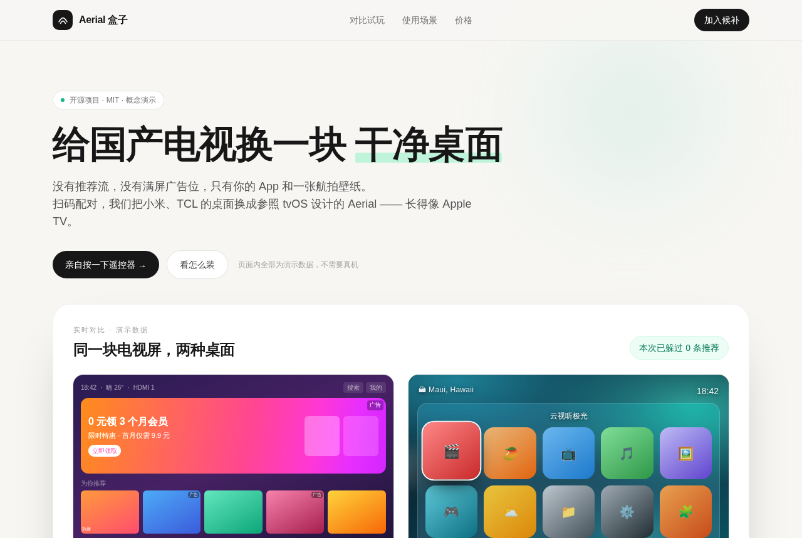

国产电视开机广告太烦？这个开源桌面直接换掉
pengchujin/aerial-tv · 效率工具MIT⭐ 2,356

今天聊一个叫 Aerial 的开源项目（仓库 pengchujin/aerial-tv），它给小米、TCL 这类国产电视换上一个没有广告、没有推荐流的干净桌面，界面照着 Apple TV 的 tvOS 设计。最近火起来，主要是开机广告和系统里塞满的推荐位实在让人烦，而它刚好提供了「不用 root」也能把默认桌面换掉的方案。从 README 看，安装方式是电脑和电视连同一个 Wi-Fi，通过 ADB 装 APK 并授权，还有一键脚本。装好之后开机自动接管，待机被系统杀掉也能复活。功能上有航拍屏保、必应壁纸、信号源磁贴、手机扫码换壁纸等。如果做成产品，机会不在卖软件，而在「帮人装好」这件事本身：对不折腾的用户来说，ADB 这一步仍然太高，做一个扫码配对、远程代装的盒子或上门服务，再搭会员主题包，可能比直接卖桌面更现实。
今日 Top 5
| # | 项目 | 传播 | 创业 | 综合 |
|---|---|---|---|---|
| 1 | pengchujin/aerial-tv | 7.67 | 6.65 | 7.16 |
| 2 | simbasjungles/free-my-tv | 7.0 | 6.85 | 7.09 |
| 3 | Gathin23/cleanyourtv | 8.0 | 5.5 | 7.0 |
| 4 | tangency-labs/solidcraft | 7.0 | 5.85 | 6.85 |
| 5 | ikow/php2shell-poc | 8.0 | 5.9 | 6.81 |